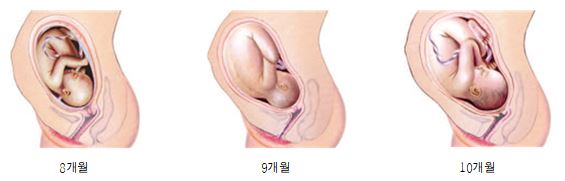

아이가 있어 행복한 사회 "아이사랑"이 만들어 가겠습니다.
임신 후기는 임신의 마지막 3개월로서 출산에 대한 걱정이 들기도 하며 시간이 빨리 지나가기를 원하기도 합니다. 임신 후기에서 임신부는 약 5kg의 체중이 증가 됩니다. 이 체중의 대부분은 태아에게서 올 수 있는 체중이지만 양수, 태반, 유방, 혈액 및 자궁으로 인하여 추가로 체중이 증가 됩니다. 이 기간에 산전검사를 더 자주 받게 됩니다. 임신부와 태아의 건강 등을 포함하여 모든 상황이 순조롭게 진행이 되고 있는지 주기적인 확인이 필요합니다. 이 시기에는 요통, 수면 중의 불편감, 태아로부터의 폐 압박 등이 나타날 수 있어 불편감을 호소할 수 있습니다. 자궁근육의 강화로서 Braxton Hicks 수축이 나타나는데 이는 불규칙적으로 몇 분간 지속되지만 통증이 있지는 않습니다. 출산 징후는 아닙니다.

(출처: 여성가족부, 초보 아빠 수첩, 2018)
1. 태아의 성장
시각과 청각이 거의 완성되어 자극에 적극적으로 반응합니다. 얼굴은 아직 주름투성이지만 몸엔 피하지방이 붙기 시작해 주름이 줄어듭니다. 그 동안 꾸준히 발달해 온 청각이 이 시기가 되면 거의 완성되어 엄마의 몸 밖에서 나는 신기한 소리에 몸을 긴장시키거나 놀라는 일이 생깁니다. 화내는 소리나 시끄러운 소리는 완연하게 싫어하고 편안한 음악이나 엄마의 목소리는 좋아합니다. 시각도 발달해 밖에서 강한 빛을 쪼이면 움찔 놀라는 등 반응을 보이게 됩니다.
2. 모체의 변화
배가 커져 배꼽이 튀어나옵니다. 자궁이 배꼽과 명치 사이의 중간쯤까지 올라와서 심장이나 위가 눌리기 때문에 더부룩한 느낌이 듭니다. 가슴이 두근거리고 위가 쓰리는 등 불쾌한 증상이 많아집니다. 저녁이면 발, 다리가 붓기도 하고 젖꼭지의 색도 진해집니다. 몸동작이 점차 서툴러지고 배가 커지면서 복부가 자주 가렵고 배꼽이 튀어나옵니다.
1. 태아의 성장
몸에 피하지방이 붙어 통통해집니다. 피하지방이 붙기 시작한 태아는 몸이 동그스름해지고 제법 통통해집니다. 눈꺼풀이 완전하게 형성되고 눈동자도 생겨 눈을 뜨기 시작합니다. 눈동자가 완성되고 초점 맞추는 연습을 시작하며 엄마가 기뻐하는 것, 슬퍼하는 것 등 감정 변화도 알아차립니다. 소리에 대한 반응이 자주 나타나고 태아의 움직임이 활발하여 자궁벽을 세게 차기도 합니다. 뇌의 크기가 훨씬 커지고 뇌가 두개골 크기 속에 맞추기 위해 마치 호두처럼 주름을 만들면서 접혀집니다.
2. 모체의 변화
숨이 가빠지고 허리, 등의 통증을 자주 느낍니다. 자궁이 폐를 떠밀어서 호흡이 짧아집니다. 허리나 등 부분의 통증이 자주 일어나고 쉽게 피로를 느끼게 됩니다. 팔, 다리는 물론 얼굴이 붓기도 하는데 저녁 무렵에 조금 붓는 것은 관계없지만, 아침부터 부종이 생기면서 호전되지 않고 심해진다면 자간전증(임신중독증)일 가능성이 있습니다. 체중이 갑자기 늘거나 두통, 상복부 통증, 시야 흐림 등 증상이 나타나면 임신중독증 악화 증상일 수 있으므로 빨리 병원에 방문해야 합니다.
1. 태아의 성장
위치를 자유롭게 바꾸며 움직이던 태아도 출산에 대비해 머리를 골반 아래로 향하게 됩니다. 머리를 거꾸로 두고 있는 일도 있지만, 자세를 바꿀 시간이 충분하므로 걱정하지 않아도 됩니다. 배내털이 점점 줄어들고 어깨와 등 쪽에만 약간 남으며 머리카락도 길게 자랍니다. 태아는 탯줄을 통해 태반으로부터 산소를 공급받습니다. 그러나 이 시기가 되면 횡격막이 움직이기 시작하는 등 호흡을 위한 연습을 본격적으로 시작합니다.
2. 모체의 변화
유방의 색소 침착이 심해집니다. 초유가 만들어지기 시작하며 사람에 따라서는 초유가 흘러나오기도 합니다. 하복부, 유두, 외음부에 색소 침착이 심해지나 출산 뒤에 다시 엷어지니 크게 걱정하지 않아도 됩니다. 계속 속이 거북하고 요통, 정맥류, 치질 등으로 고생하기 때문에 심리적으로는 임신상태가 빨리 끝나기를 원하게 됩니다. 이 시기에는 양수의 양은 별로 증가하지 않습니다.
1. 태아의 성장
태아의 크기는 40cm, 체중은 1.5kg 정도가 됩니다. 몸에 살이 붙은 태아는 피하지방이 적어 주름투성이긴 하지만, 얼굴도 형태가 뚜렷해집니다. 골격이 거의 완성되고 뇌세포와 신경 순환계가 연결되어 활동하기 시작합니다. 태아의 기억력이나 감각 능력이 훨씬 잘 발달하게 됩니다. 양수의 양은 최대로 늘어나지만, 아기도 커져 움직일 공간이 적어져 동작이 둔해집니다. 스스로 체온을 조절하고 호흡할 수 있어 조산해도 생존할 확률이 높습니다. 그러나 아직 피하지방이 부족하고 각 기관이 충분하게 발달하지는 못해 인큐베이터의 도움을 통해서라야 합니다.
2. 모체의 변화
심호흡을 자주 하고 식사하기가 불편해집니다. 자궁저부의 높이는 25~28cm, 배는 점점 더 커지며 자궁은 가슴뼈 7~8cm 아래까지 올라와 위가 압박되고 식사가 거북해집니다. 태동이 강해지고 숨이 차며 숨을 쉬어도 제대로 쉰 것 같지 않아 심호흡을 자주 하게 됩니다. 누워있으면 숨이 더 차게 되어 똑바로 눕지 못하는 경우가 많습니다. 자궁이 수축하여 하루에 4~5회 배가 똘똘 뭉치는 듯한 느낌이 듭니다. 임신부의 몸이 서서히 출산 준비에 들어가며 분비물도 늘어갑니다.
1. 태아의 성장
복부 표면에서도 태아의 힘찬 움직임이 보입니다. 손, 발가락을 꼼지락거리기도 하며 팔, 다리 힘이 좋아져 기운차게 팔을 굽혔다 폈다 합니다. 임신부의 복부 표면에서까지 그 활기찬 움직임을 볼 수 있습니다. 안구의 홍채가 수축 이완을 하기 시작하며 밝은 빛을 비추면 홍채가 수축합니다. 사물을 보기 위해 눈을 떠 초점을 맞추거나 눈을 깜빡일 수 있게 됩니다.
2. 모체의 변화
임신 호르몬이 골반 근처, 특히 엉덩이와 방광 앞에 있는 뼈의 관절을 늘어나게 하고 약하게 하여 척추주위의 인대나 근육을 쉽게 다치게 합니다. 또 허리나 엉덩이, 방광 앞쪽 부위의 관절이 늘어나 있어 몸을 움직일 때 관절이 어긋나게 되어 ‘뚝뚝’ 소리가 나기도 하고 아픔을 느끼기도 합니다. 또 자궁이 갈비뼈 바로 아래 정도까지 올라와 위가 치밀라며 가슴이 답답해집니다. 마치 입덧을 하는 것처럼 속이 거북해집니다.
1. 태아의 성장
피하지방이 늘어나고 주름이 없어집니다. 피부색은 피하지방이 늘어나 붉은 기운이 옅어지고 포동포동해지며 예뻐집니다. 태아의 피부밑에 축적되는 백색의 지방은 태아에게 에너지를 주고 태어난 이 후 체중을 조절해주는 역할을 합니다. 장기도 거의 발달하여 피부의 털도 거의 사라집니다. 손톱은 손가락 끝에 닿을 만큼 자랍니다. 그러나 발톱은 아직 덜 자란 상태입니다. 머리카락도 숱이 꽤 많이 늘어있습니다. 태아 체내의 모든 호르몬 분비샘들이 거의 어른과 비슷한 크기로 자랍니다.
2. 모체의 변화
모체는 자궁이 명치 가까이 육박하며 흉부쪽으로 압박하기 때문에 식사를 충분히 할 수 없게 되고 심장 압박으로 심장박동이 급해지며 숨도 매우 가빠집니다. 어깨로 숨을 쉰다는 말이 나올 정도로 힘들어지는 시기입니다. 늘어난 자궁의 무게로 인해 골반 뼈의 연결된 부분인 치골도 아프고 변비와 치질이 생기기 쉬워집니다. 복부는 배꼽이 튀어나올 정도로 불룩해지고 배가 단단해지면서 소변보는 횟수도 늘어납니다. 분만에 가까워질수록 불규칙한 자궁수축이 잦아집니다.
1. 태아의 성장
태아의 위치가 거의 정해집니다. 이 시기의 태아는 대부분이 머리를 아래로 향하며 분만 위치를 잡습니다. 그러나 어떤 태아들은 분만 때까지도 머리가 위로 향한 채 남아 있습니다. 태아는 움직일 공간이 좁아져 더 꿈틀거리고 덜 차는 등 움직임이 둔해집니다. 그러나 외부 자극에 대해서는 몸으로 반응합니다. 감각기관이 꽤 발달해 자극에 적극적으로 반응하는 힘이 생기는데 가끔 아기가 웃고 있거나 화를 내는 듯한 표정의 변화가 느껴지기도 합니다. 초음파로 검사해보면 실제로 혼자 빙그레 웃기도 합니다.
2. 모체의 변화
요통이 심해지고 생활하기 힘들어집니다. 자궁저의 높이가 30cm 정도로 배가 커지면서 요통이 심해지고 행동은 더욱 굼떠집니다. 엉덩이와 골반이 불편하고 아프고 자궁이 방광을 압박해 배뇨 횟수가 늘어나며 소변을 본 뒤에도 방광에 소변이 남아 있는 것 같아 개운하지가 않습니다. 질 분비물이 더 진해지고 더 많은 점액이 들어있습니다. 발목과 발이 더 많이 붓고 손과 얼굴도 붓게 됩니다. 다리에 쥐가 나거나 통증이 생길 수 있고 자다가 다리에 경련이 오기도 합니다. 색소 침착이 심해져 흑색 선이 눈에 띄게 진해집니다.
1. 태아의 성장
신생아와 비슷한 체형이 됩니다. 태아의 크기는 45~46cm, 체중은 2.3~2.6kg 정도가 됩니다. 드디어 신생아와 거의 비슷한 체형에 이르게 됩니다. 피부 보호 물질인 태지도 매우 두터워집니다. 외성기가 다 완성되어 남녀의 구별이 확실해집니다. 발톱도 끝까지 다 자랍니다. 폐를 제외한 내장의 기능이 대부분이 완전히 성숙하여 이 시기의 태아는 조산을 해도 호흡에 약간의 문제가 있지만, 대부분 건강하게 자랍니다.
2. 모체의 변화
계속 생활의 불편함이 늘어납니다. 출산할 때가 거의 다 되었다는 안도감이 들면서도 걱정이 되고 간혹 조급해지고 마음을 가라앉힐 수 없어서 짜증과 신경이 과민해집니다. 코피와 코 막힘, 귀 막힘 증세가 나타나는 수도 있고 빈혈 증세가 나타날 수도 있습니다. 잇몸이 약해지면서 피가 나기도 합니다. 식욕이 늘었다 줄었다 하고 두통, 어지럼증, 현기증 증세가 나타나기도 하는 등 불편함이 늘어갑니다.
1. 태아의 성장
내장기능도 원활해지고 살이 오르며 근육도 제법 발달합니다. 출산 시기가 가까워져 오며 머리는 점차 골반 안으로 내려오게 됩니다. 이렇게 되면 몸이 고정되어 태아는 움직임이 점점 둔해지게 됩니다. 태반을 통해 모체로부터 질병에 대한 면역력이 전달되며 태아는 탄생을 기다리게 됩니다.
2. 모체의 변화
위가 편해지고 숨도 덜 차게 됩니다. 태아가 골반 속으로 내려감으로 눌려 있던 위가 편해져 숨도 덜 차고 식욕도 좋아집니다. 배가 커지면서 등이 당기고 부종이 생길 수 있습니다. 아기가 꼭 예정일에 태어나는 것이 아니므로 자궁이 수축되는 듯하면 규칙적으로 일어나고 있는지 체크하여 병원에서 상담을 받습니다.
1. 태아의 성장
살이 통통하게 올라 피부의 잔주름이 없어집니다. 심장, 간장, 호흡기, 소화기, 비뇨기 등 모든 장기가 완성됩니다. 몸은 자궁을 꽉 채울 만큼 커져서 등을 움츠리고 팔과 다리를 앞으로 모은 자세를 취하고 있습니다. 감염에 대한 저항력도 강해져 이 시기 이후에는 언제 태어나도 문제없는 상태가 됩니다. 태아의 배넷 털이 거의 다 빠지고 어깨나 팔, 다리 등 몸의 주름진 부위에만 조금 남습니다.
2. 모체의 변화
아기가 쉽게 나올 수 있게 질이 부드러워집니다. 태아의 머리가 점점 내려가 소변이 자주 마렵고 복부가 당기는 느낌이 있습니다. 태아의 움직임은 다소 적어지지만 힘찹니다. 피부의 착색, 유방의 부푼 정도, 임신선 등이 가장 현저해지고 출산을 위해 산도는 부드러워집니다. 아기가 쉽게 나올 수 있게 자궁구가 축축해지면서 유연해지고 탄력성이 생깁니다. 간혹 자궁경부 구가 미리 열리는 임신부도 있습니다.
1. 태아의 성장
몸은 완전한 4등신이며 신생아와 거의 차이가 없는 얼굴 모양을 갖게 됩니다. 스스로 체온 조절을 할 정도로 지방층이 충분히 갖추어져 있습니다. 출생 후 얼굴을 긁어 상처를 입히지 않도록 손톱을 잘 감싸주어야 할 만큼 손톱이 길게 자라고 머리카락도 3cm 정도로 자라있습니다. 밖에서의 생활에 대비해 효소와 호르몬을 저장합니다. 40분 주기로 잠자고 깨어있는 시간의 리듬이 생깁니다.
2. 모체의 변화
대부분 태아는 머리를 아래로 향한 위치가 고정되며 머리 부분이 모체의 골반 안으로 들어가 태동이 둔해집니다. 이로 인해 위의 압박감이나 답답함이 한결 덜해집니다. 그러나 배가 점점 무거워져 움직이거나 잠을 잘 때도 힘이 듭니다. 태아가 지나치게 조용하거나 태동이 없으면 병원에 가보는 것이 좋습니다.
1. 태아의 성장
지금이라도 당장 바깥세상으로 나갈 수 있습니다. 키는 약 50cm, 체중은 약 3㎏, 머리둘레는 가 됩니다. 피부에 윤기가 있고 핑크빛이며 태지도 그리 많지 않습니다. 포동포동하고 피부에는 윤기가 흐릅니다. 소리, 냄새, 빛, 촉감에 반응할 수 있을 만큼 전 영역에 걸쳐 반사작용을 지니게 됩니다. 눈썹도 분명하며 사지를 활발하게 움직이고 배뇨, 배변도 하게 됩니다.
2. 모체의 변화
배가 당기는 증상이 자주 나타납니다. 태아가 언제든지 나올 수 있는 상태가 됩니다. 아기가 커짐에 따라 뱃가죽은 더욱 팽팽하게 퍼져서 배꼽의 패인 부분이 드러나지 않게 됩니다. 출산이 가까워지면 배가 당기는 증상이 빈번해지나 진통이 불규칙적이라면 가진통으로 걱정할 필요가 없습니다.
출산이 임박했습니다. 출산이 임박하면 임신부의 몸은 다음의 증세가 나타납니다. 피가 섞인 이슬이 비치고 규칙적인 진통이 시작됩니다. 이슬이 비치고도 2~3일, 길게는 일주일 후에 출산하는 경우도 있습니다. 대개 진통이 먼저 시작되고 파수가 되지만, 진통이 시작되기도 전에 파수가 이루어지기도 하므로 소변인지 양막 파수인지 판단이 서지 않을 때는 바로 병원으로 가서 진찰을 받습니다.
출산을 알리는 여러 가지 징후가 있습니다.
위 주위가 가벼워집니다.
태아가 골반 안으로 내려가 눌려 있던 위장이 부담을 덜 받게 되기 때문입니다.
배가 자주 당깁니다.
출산을 대비한 자궁수축 운동으로 배가 불규칙하게 자주 땅기는데 이를 ‘가진통’이라고 합니다.
태아의 움직임이 적어집니다.
태아가 세상 밖으로 나오기 위해 골반으로 들어간 상태이기 때문에 움직임이 줄어듭니다.
소변을 자주 보게 됩니다.
엄마 배 밑으로 내려온 태아가 방광을 누르기 때문에 소변을 자주 봅니다.
피가 섞여 있는 이슬이 보입니다.
점액처럼 끈끈하고 하얀색의 분비물에 피가 조금씩 섞여 있다. 대부분 이슬이 비치고 2~3일 뒤에 진통이 나타나지만 길게는 일주일 후에 출산하는 경우도 있습니다.
주기적으로 진통이 찾아옵니다.
불규칙한 가진통이 있다가 20~30분 간격으로 10~20초의 강한 진통이 옵니다. 그러다가 점점 진통이 느껴지는 시간이 단축되면서 10분마다 규칙적인 진통이 찾아오면 분만이 시작되었다는 신호로 받아들입니다.
양막 파수가 있습니다.
임신부 10명 중 2~3명이 진통이 시작되기 전에 양수가 먼저 터지는 조기 양막파수를 경험합니다.
규칙적인 진통이 시작된 것 같다고 판단되면, 긴장하지 말고 입원 용품 등을 준비해 병원으로 갈 준비를 합니다.
진통이 없더라도 양막이 파수되었거나 출혈 등의 증상이 있을 때는 즉시 병원으로 가야 합니다. 태어나는 즉시 아기는 자신의 폐로 호흡을 하게 됩니다. 심장의 기능도 바깥에서 생활할 수 있는 상태로 바로 바뀝니다. 구개가 완성되고 혀의 근육도 생기기 때문에 젖을 빠는 일이 가능합니다. 양수 안에서는 소리를 내는 일이 불가능했지만, 밖에서는 소리를 내어 자신의 의사를 전달합니다. 태변은 분만할 때 보는 태아도 있으며 출생 24시간 이내에 배설됩니다. 탯줄은 1주일 정도가 지나면 떨어집니다.
분만예정일은 임신 40주 0일째 되는 날이지만 예정일보다 조금 늦게 진통이 시작되기도 합니다.
만일 출산예정일이 지났는데도 별다른 출산 징후가 없다면, 초음파 검사를 통해 양수의 양과 태반의 상태 등을 확인하고 비수축검사(태동검사)를 통해 태아의 건강상태를 면밀하게 판단하게 됩니다. 비수축 검사는 임신부의 배에 분만 감시 장치를 해서 태아의 심장 박동 수와 자궁의 수축 정도를 살펴보고 분만의 시기와 분만방법을 판단하는데 이러한 검사들을 통해 태아가 건강하다고 판단된다면 진통이 오기를 조금 더 기다립니다. 산모와 태아 상태를 고려하여 유도분만을 할 수도 있습니다.
임신과 출산은 가장 흥분되면서도 힘든 일 중의 하나입니다. 임신 사실을 알게 되는 순간부터 삶은 달라지기 시작하는데, 그것은 싫은 경험이 될 수도 그렇지 않을 수도 있습니다. 그러나 분명한 것은 지금껏 경험하지 못한 새로운 감정을 갖게 된다는 것입니다.
아기와 함께 있다는 것은 사랑과 기쁨, 즐거움과 놀라움을 느낄 수 있지만, 어떤 때에는 스트레스도 받고, 좌절하고 분노하고, 실망하는 경우도 있습니다.
부모가 된다는 것은 분명 보람 있는 일이지만 가장 어려운 일이 될 수 있습니다. 삶에서 무엇이 중요한지 다시 한번 생각하는 계기가 되며 부모님들과의 관계도 되돌아보게 될 것입니다.
배우자/파트너는 아래와 같이 출산준비를 할 수 있습니다.
만약 진통이 시작되었다면 당황하지 말고 병원으로 출발합니다. 분만대기실에서는 아내와 함께 합니다. 곁에 같이 있으면 힘이 됩니다. 출산 후에는 아내에게 더 신경을 써야 합니다. 아내가 산후우울증이 있는지 더욱 관심이 필요합니다. 출산 후 2~3일이 지나면 유방에서 젖이 만들어지면서, 수유가 잘 되지 않으며 유방이 붓고 젖몸살이 생길 수 있습니다. 개인차이가 있으나 보통 4~6주 이후부터 부부관계를 시작할 수 있습니다. 하지만 아내가 원하지 않을수도 있으니 충분한 대화를 하며 서두르지 않는 것이 좋습니다.